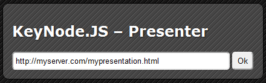
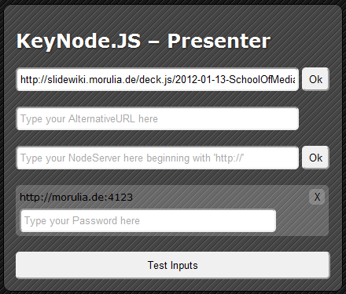
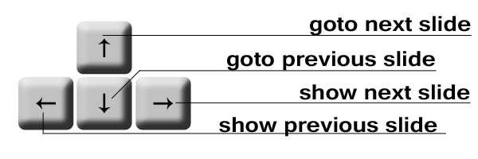

go to the presenter-folder and open the index.html with your browser (it works best with Google Chrome)

paste your canonical URL into the textfield
hit [Enter] or hit [Ok]
How to start the presenter? (2)

if the presenter gets the content form the canonical URL, it fills the values found there otherwise you have to do the following steps
[optional] add an alternate URL to your presenter, this one will used by the Presenter, if set
[optional] add another NodeServer and hit [Ok] button next to it
add the password for each NodeServer (if you know it) and hit [Test Inputs]
[optional] hit [Reset] at the NodeServer you have forget the password from, then it will be send to your emailaddress or will shown in the console of your local server, if you have one
When ready hit [start Presenter] and begin to present
How to start the presenter? (3)
Now you are on the presenter console and can begin to have your talk.
On the next Slide: How to use the presenter
How do i use the presenter? (1)
`What is shown in each part of the presenter?
On the left side: your last presentation slide
In the middle: the slide everyone listen to your presentation sees
On the right side: your next presentation slide
How do i use the presenter? (2)
With the arrow keys you can control your presentation, every change will broadcasted to every slide opened with the keynode.watcher.js included.

How do i use the server? (1)
Check if you have installed the following programms:
- node.js(download)
- npm (for easy nodepackage installation)
- socket.io (extention of node.js)
- nodemailer (extention of node.js: if you want to run a public server)
- request (extention of node.js: if you want to run a public server)
Rename or Copy: keynode.js.server_settings.js_sample to keynode.js.server_settings.js
Check the configuration if it fits to your requirements (How to Configurate)
How to actualy start the server
go to the folder and run the server:
$ cd ./server
$ node keynode.js.server.js
How do i configurate the server? (1)
in the Config file you have the following setting you can set:
Did you want to see the password in the console if you reset it or send an email?
Default:
 On the next Slide: How to use the presenter
On the next Slide: How to use the presenter